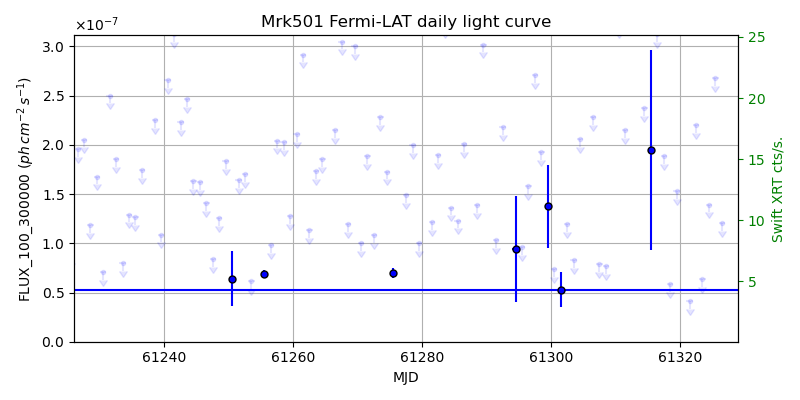
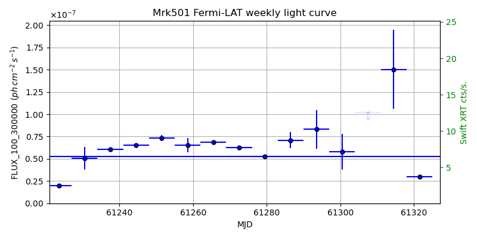
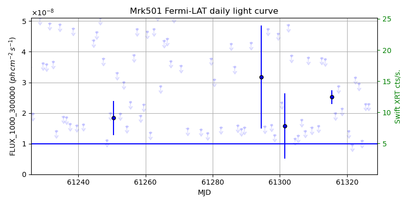
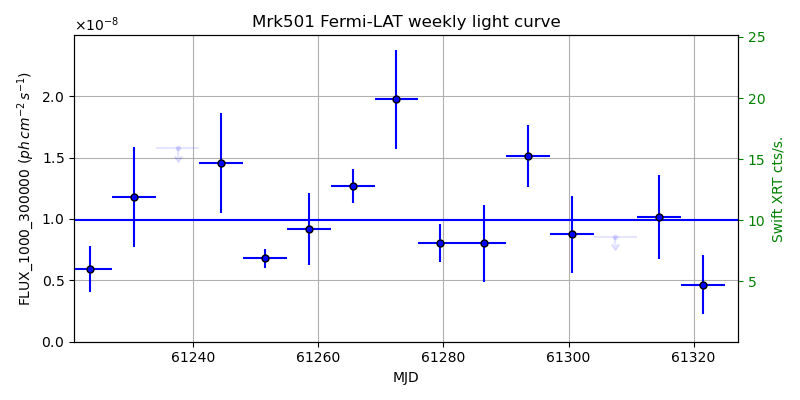

LAT Lightcurve site: https://fermi.gsfc.nasa.gov/ssc/data/access/lat/msl_lc/source/Mrk_501
Swift site: https://www.swift.psu.edu/monitoring/source.php?source=Mrk501
NED: Query
Time of last update of this page: UT: 2026-10-14 15:22 (MJD: 61327.641)
| Property | Value |
|---|---|
| R.A. | 16:53:52.32 |
| Dec. | 39:45:36.0 |
| z | 0.033 |
| 3FGL SpectrumType | PowerLaw |
| 3FGL PL Index | 1.72 |
| 3FGL Flux_100_300000 | 5.24e-08 1 / (s cm2) |
| 3FGL Flux_1000_300000 | 9.94e-09 1 / (s cm2) |
| 3FGL Flux >200 GeV | 2.19e-10 1 / (s cm2) |
| 3FGL Extrap. Crab >200 GeV | 0.93 |
| 3FGL Flux After EBL Absorption >200GeV | 1.76e-10 1 / (s cm2) |
| 3FGL EBL Crab Fraction >200GeV | 0.74 |

| MJD | dMJD | Flux | dFlux | Frac3FGL | FracCrab>200GeV | EBLFracCrab>200GeV |
|---|---|---|---|---|---|---|
| 61322.50 | 0.50 | 2.20e-07 | 0.00e+00 | 0.00 | 0.00 | 0.00 |
| 61323.50 | 0.50 | 6.36e-08 | 0.00e+00 | 0.00 | 0.00 | 0.00 |
| 61324.50 | 0.50 | 1.39e-07 | 0.00e+00 | 0.00 | 0.00 | 0.00 |
| 61325.50 | 0.50 | 2.68e-07 | 0.00e+00 | 0.00 | 0.00 | 0.00 |
| 61326.50 | 0.50 | 1.21e-07 | 0.00e+00 | 0.00 | 0.00 | 0.00 |

| MJD | dMJD | Flux | dFlux | Frac3FGL | FracCrab>200GeV | EBLFracCrab>200GeV |
|---|---|---|---|---|---|---|
| 61293.50 | 3.50 | 8.31e-08 | 2.16e-08 | 1.58 | 1.50 | 1.20 |
| 61300.50 | 3.50 | 5.81e-08 | 2.00e-08 | 1.11 | 1.05 | 0.84 |
| 61307.50 | 3.50 | 1.02e-07 | 0.00e+00 | 0.00 | 0.00 | 0.00 |
| 61314.50 | 3.50 | 1.50e-07 | 4.45e-08 | 2.87 | 2.71 | 2.18 |
| 61321.50 | 3.50 | 3.00e-08 | 1.11e-09 | 0.57 | 0.54 | 0.43 |

| MJD | dMJD | Flux | dFlux | Frac3FGL | FracCrab>200GeV | EBLFracCrab>200GeV |
|---|---|---|---|---|---|---|
| 61322.50 | 0.50 | 3.17e-08 | 0.00e+00 | 0.00 | 0.00 | 0.00 |
| 61323.50 | 0.50 | 2.95e-08 | 0.00e+00 | 0.00 | 0.00 | 0.00 |
| 61324.50 | 0.50 | 1.09e-08 | 0.00e+00 | 0.00 | 0.00 | 0.00 |
| 61325.50 | 0.50 | 2.30e-08 | 0.00e+00 | 0.00 | 0.00 | 0.00 |
| 61326.50 | 0.50 | 2.30e-08 | 0.00e+00 | 0.00 | 0.00 | 0.00 |

| MJD | dMJD | Flux | dFlux | Frac3FGL | FracCrab>200GeV | EBLFracCrab>200GeV |
|---|---|---|---|---|---|---|
| 61293.50 | 3.50 | 1.51e-08 | 2.51e-09 | 1.52 | 1.44 | 1.16 |
| 61300.50 | 3.50 | 8.73e-09 | 3.17e-09 | 0.88 | 0.83 | 0.67 |
| 61307.50 | 3.50 | 8.54e-09 | 0.00e+00 | 0.00 | 0.00 | 0.00 |
| 61314.50 | 3.50 | 1.02e-08 | 3.42e-09 | 1.02 | 0.97 | 0.78 |
| 61321.50 | 3.50 | 4.63e-09 | 2.40e-09 | 0.47 | 0.44 | 0.35 |
--------------------------------------------------------- Using user-supplied coords: 16:53:52.32 39:45:36.0 2000 --------------------------------------------------------- FLWO UT night of: 2026-10-15 Local Sid. @ Midnight: 01:11 Sunset (-15.0) (local, UT): 18:59 01:59 Sunrise (-15.0) (local, UT): 05:20 12:20 Moonrise (local, UT): Moonset (local, UT): 20:19 03:19 Moon phase: 0.20 --------------------------------------------------------- AzTime LSID UT Obj_el Obj_az Mn_el Mn_az Sep. --------------------------------------------------------- 18:59 20:10 01:59 50.0 295.6 12.2 226.1 67.7 19:29 20:40 02:29 44.3 296.6 7.6 230.6 67.6 19:59 21:10 02:59 38.6 297.9 2.8 234.8 67.6 20:29 21:40 03:29 33.0 299.7 -1.5 238.6 67.6 20:59 22:10 03:59 27.5 301.7 -8.0 242.2 67.6 21:29 22:40 04:29 22.1 304.1 -13.5 245.5 67.5 21:59 23:10 04:59 16.9 306.7 -19.2 248.6 67.5 22:29 23:40 05:29 11.9 309.6 -24.9 251.6 67.5 22:59 00:10 05:59 7.1 312.9 -30.8 254.4 67.4 23:29 00:40 06:29 2.7 316.5 -36.7 257.2 67.4 23:59 01:10 06:59 -1.0 320.4 -42.7 260.0 67.4 00:29 01:41 07:29 -5.4 324.7 -48.8 262.9 67.4 00:59 02:11 07:59 -9.2 329.3 -54.8 265.9 67.4 01:29 02:41 08:29 -12.2 334.3 -60.9 269.3 67.4 01:59 03:11 08:59 -14.7 339.7 -67.0 273.3 67.4 02:29 03:41 09:29 -16.6 345.4 -73.0 278.9 67.4 02:59 04:11 09:59 -17.9 351.3 -78.9 288.3 67.4 03:29 04:41 10:29 -18.5 357.3 -84.2 313.0 67.4 03:59 05:11 10:59 -18.5 3.4 -85.5 28.0 67.4 04:29 05:41 11:29 -17.8 9.5 -80.8 66.7 67.5 04:59 06:11 11:59 -16.4 15.3 -75.0 79.0 67.5 05:20 06:32 12:20 -15.1 19.3 -70.9 83.7 67.5 --------------------------------------------------------- Dark hours >55 deg.: 0.00